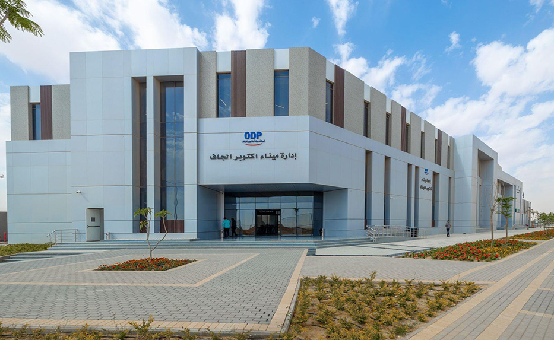
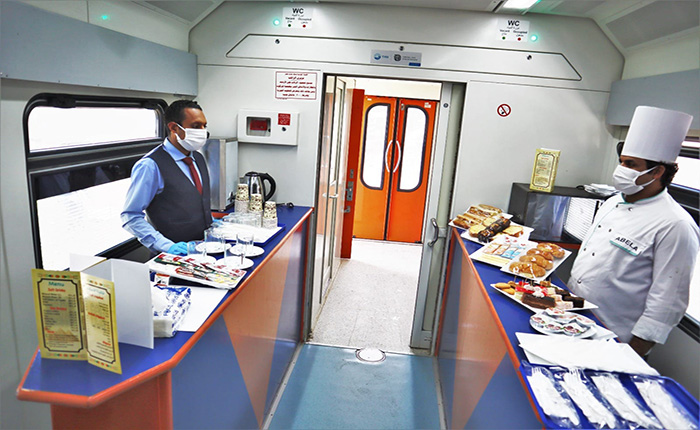

-

Speech of the Minister of Transport before His Excellency President Abdel Fattah El-Sisi, President of the Republic, during his inauguration of the "Tahya Misr" multi-purpose station in Alexandria Port and a number of maritime transport projects, and land and dry ports
Raising the Egyptian flag on the ship Valley of the Kings during the inauguration of His Excellency President Abdel Fattah El-Sisi, President of the Republic, the "Tahya Misr" multi-purpose station in Alexandria Port and a number of maritime transport projects, and land and dry ports. (Quoting from the Maritime Transport Sector's page) …
-
President recieves CEO of French International Shipping Company after the inauguration of Tahya Misr StationWithin the framework of President Abdel Fattah El-Sisi's attendance today at the opening of the "Tahya Misr" multi-purpose terminal at Alexandria Grand Port, and raising the flag on the Valley of the Kings, the largest and most modern ship of the Egyptian commercial fleet, His Excellency received Mr. Rodolphe Saadah, CEO of the French International Shipping Company "CMA CGM", and a number of senior officials of the company, in the presence of Lieutenant General Kamel El-Wazir, Minister of Transport. (Quoting from the Maritime Transport Sector's page) …
-

A prominent role for the October Dry Port in the movement of imports and exports coming to and from seaportsThe Egyptian satellite channel.. news bulletin.....the Land and Dry Ports Authority: a prominent role for the October Dry Port in the movement of imports and exports coming to and from Egyptian seaports. (Quoted from the Maritime Transport Sector page) … …
-

Press Release Issued by the Ministry of TransportA statement issued by the Ministry of Transport regarding the circulating pictures of some employees of Ramses Railway Station eating at one of the electronic traffic gates inside the station hall . (Quoted from the Maritime Transport Sector page) … …